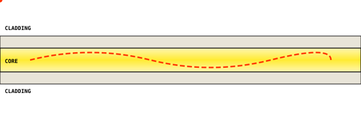

Dasar
Kabel fiber optik (serat optik) adalah media transmisi dari serat kaca silika murni, berdiameter sekitar 125 mikrometer.
Data dikirim sebagai pulsa cahaya yang merambat di dalam serat. Satu helai serat dapat membawa puluhan hingga ratusan kanal informasi via wavelength division multiplexing (WDM).
Cahaya dipandu di dalam inti serat melalui fenomena pemantulan internal total. Pemantulan ini terjadi karena indeks bias inti (core) lebih tinggi daripada cladding. Inti sekitar 1,47, cladding sekitar 1,46.
Ukuran dan Kapasitas
Ukuran serat ditulis sebagai core/cladding dalam mikrometer. Standar: 9/125 (single mode), 50/125 atau 62,5/125 (multi mode). Kapasitas: 10-400 Gbps per panjang gelombang, dapat diperbesar dengan DWDM.
| Aspek | Single Mode | Multi Mode |
|---|---|---|
| Core | 8-10 um | 50/62,5 um |
| Sumber | Laser | LED/VCSEL |
| Jarak | 10-100+ km | 300m-2km |
| Bandwidth | Tak terbatas | Terbatasi dispersi |
| Biaya | Mahal | Murah |
Struktur
Kabel FO tersusun berlapis dari dalam ke luar. Setiap lapisan punya fungsi spesifik.
Inti serat kaca tempat cahaya merambat. 8-10 um (SM), 50/62,5 um (MM).
Lapisan kaca indeks bias lebih rendah, memantulkan cahaya ke core.
Lapisan akrilat berwarna untuk proteksi dari goresan dan kelembapan.
Tabung plastik berisi serat dan gel thixotropic anti-air.
Benang aramid (Kevlar) atau batang FRP penahan beban tarik.
Jaket PE/PVC/LSZH proteksi UV, gesekan, bahan kimia.
Cara Kerja
Pengiriman data via FO: ubah data jadi cahaya, rambat di serat, ubah balik jadi data.

- Modulasi sinyal. Transmitter (laser dioda/LED) ubah sinyal listrik jadi pulsa cahaya. Bit 1 = nyala, bit 0 = mati.
- Perambatan. Cahaya masuk core dengan sudut tertentu, dipantulkan total di dinding cladding. Sepanjang jalan: atenuasi (melemah) dan dispersi (pulsa melebar).
- Deteksi. Photodiode di receiver ubah pulsa cahaya balik jadi sinyal listrik.
Atenuasi: SM sekitar 0,35 dB/km @1310 nm, 0,20 dB/km @1550 nm. MM sekitar 3 dB/km @850 nm.
Jenis
| Kategori | Core | Warna Jaket | Kecepatan | Jarak Maks |
|---|---|---|---|---|
| OM1 | 62,5/125 um | Oranye | 1 Gbps | 275 m |
| OM2 | 50/125 um | Oranye | 1-10 Gbps | 550 m |
| OM3 | 50/125 um | Aqua | 10-40 Gbps | 300 m |
| OM4 | 50/125 um | Aqua/Violet | 40-100 Gbps | 550 m |
| OM5 | 50/125 um | Lime | 40-100 Gbps (WDM) | 550 m |
| OS1/OS2 | 9/125 um | Kuning | 10G-400G | 10-100+ km |
Berdasarkan Konstruksi
- Simplex/Duplex. 1 serat (1 arah) atau 2 serat (TX/RX).
- Drop cable (FTTH). Tipis fleksibel, 1-2 serat, strength member FRP.
- Distribution. Banyak serat dalam loose tube, antar ODC-ODP.
- ADSS. All-Dielectric Self-Supporting, gantung di tiang SUTET.
- OPGW. Optical Ground Wire, serat di kawat tanah SUTT.
- Submarine. Kabel laut antar benua, armoring baja berat.
Kode Warna TIA/EIA-598
12 warna untuk identifikasi serat di dalam tube. Pola berulang untuk serat ke-13+.
- 01Biru
- 02Oranye
- 03Hijau
- 04Coklat
- 05Abu-abu
- 06Putih
- 07Merah
- 08Hitam
- 09Kuning
- 10Violet
- 11Pink
- 12Aqua
| No | Warna | Hex | RGB |
|---|---|---|---|
| 01 | Biru | #1E6FD9 | 30,111,217 |
| 02 | Oranye | #F97316 | 249,115,22 |
| 03 | Hijau | #22C55E | 34,197,94 |
| 04 | Coklat | #92400E | 146,64,14 |
| 05 | Abu-abu | #94A3B8 | 148,163,184 |
| 06 | Putih | #F1F5F9 | 241,245,249 |
| 07 | Merah | #DC2626 | 220,38,38 |
| 08 | Hitam | #0F172A | 15,23,42 |
| 09 | Kuning | #EAB308 | 234,179,8 |
| 10 | Violet | #8B5CF6 | 139,92,246 |
| 11 | Pink | #EC4899 | 236,72,153 |
| 12 | Aqua | #06B6D4 | 6,182,212 |
Kelebihan dan Kekurangan
- Bandwidth besar
- Jarak jauh, repeater jarang
- Bebas EMI
- Sulit disadap
- Ringan dan kecil
- Tidak berkarat
- Aman dari korsleting
- Peralatan mahal
- Rentan tekukan tajam
- Perlu tenaga ahli
- Tidak bisa daya listrik
- Perbaikan butuh alat khusus
- Konektor mudah kotor
- Getar di suhu ekstrem
Perbandingan Media
| Aspek | Fiber Optik | UTP | Coaxial | Wireless |
|---|---|---|---|---|
| Bandwidth | 10G-100+G | 1-10G | 100M-1G | Bervariasi |
| Jarak | 10-100 km | 100 m | 200-500 m | 100m-50km |
| EMI | Sangat baik | Rendah | Sedang | Rentan |
| Keamanan | Tinggi | Sedang | Sedang | Rendah |
| Biaya kabel | Sedang | Rendah | Rendah | N/A |
Aplikasi
- Backbone internet - antar kota dan kabel laut.
- FTTH/FTTx - internet rumah langsung serat.
- Data center - 25G-400G per link.
- CCTV dan keamanan - jarak jauh tanpa EMI.
- Industri dan SCADA - lingkungan medan elektromagnetik tinggi.
- BTS dan radio - fronthaul/backhaul menara.
- Sensor - Fiber Bragg Grating untuk regangan jembatan.
Konektor dan Alat Ukur
Jenis Konektor
- SC. Persegi, push-pull. Paling umum FTTH Indonesia.
- LC. Kecil (SFF), latch RJ45. Dominan data center.
- ST. Bayonet putar. Jaringan lama multi mode.
- FC. Ulir, stabil. Telecom dan lab.
Alat Ukur
| Alat | Fungsi | Kapan |
|---|---|---|
| Fusion splicer | Sambung serat dengan busur listrik | Splicing ODP/closure |
| Fiber cleaver | Potong serat sudut 90 derajat presisi | Sebelum splicing |
| OTDR | Ukur redaman dan lokasi gangguan | Commissioning/troubleshoot |
| OPM | Ukur daya optik diterima | Cek level sinyal |
| VFL | Laser merah cari titik patah | Pencarian cepat |
| OLTS | Uji total loss end-to-end | Sebelum aktif |
| Fiber cleaner | Bersihkan ferrule konektor | Sebelum connect |
Instalasi
- Jaga radius bending. Minimal 10-20x diameter. Drop cable minimal 15 mm.
- Jangan melebihi batas tarik. 100-2700 N. Pakai grip, jangan tarik jaket.
- Bersihkan sebelum koneksi. Debu 1 um bisa tambah loss. Pakai one-click cleaner.
- Hindari tekukan 90 derajat. Pakai elbow/ray radius memadai.
- Beri slack. 5-10 m di closure untuk perbaikan.
- Labeli setiap serat. Ikuti kode warna dan label tube/port.
- Lindungi UV dan hewan. Outdoor: UV-resistant. Tanam: armored.
- Dokumentasikan hasil ukur. Simpan baseline OTDR dan OPM.
Tools
Kalkulator dan kuis. Semua client-side.
Troubleshooting
- OTDR tidak connect. Cek kabel USB/LAN, pastikan panjang gelombang sesuai, clean connector. Restart OTDR.
- Redaman tinggi di sambungan. Clean ferrule, cek cleave angle (kurang dari 0.5 derajat), pasang splice sleeve. Ulangi splice kalau lebih dari 0.1 dB.
- Sinyal hilang. VFL untuk cari patah. Cek connector alignment, macro-bending. OPM untuk konfirmasi daya.
- Ghost di OTDR. Refleksi kuat di connector. Clean, pakai attenuator sementara.
- Splicer fiber too short. Cleave terlalu pendek. Atur 10-16mm, ganti blade kalau tumpul.
- Loss tidak konsisten. Stabilkan suhu, cek adapter, tunggu 30s setelah pasang.
- Konektor kotor terus. Pakai dust cap, one-click cleaner sebelum connect, pertimbangkan shutter otomatis.
Standar dan Regulasi
| Standar | Organisasi | Cakupan |
|---|---|---|
| G.652 | ITU-T | Single mode standar |
| G.655 | ITU-T | NZDSF untuk DWDM jarak jauh |
| G.657 | ITU-T | Bending insensitive untuk FTTH |
| G.984 | ITU-T | GPON - 2.5G down / 1.25G up |
| G.9807 | ITU-T | XGS-PON - 10G symmetric |
| 598 | TIA/EIA | Kode warna serat (12 warna) |
| 11801 | ISO/IEC | Kabel kelas OM/OS |
| IEEE 802.3 | IEEE | Ethernet over fiber (10G/40G/100G) |
| SNI 7115 | BSN | Kabel serat optik Indonesia |
Glosarium
- Atenuasi
- Penurunan daya sinyal optik sepanjang serat (dB/km).
- Bandwidth
- Rentang frekuensi yang dapat dibawa (Gbps/THz.km).
- Cladding
- Lapisan kaca indeks bias lebih rendah dari core.
- Core
- Inti serat tempat cahaya merambat.
- Dispersi
- Pelebaran pulsa akibat perbedaan kecepatan cahaya.
- DWDM
- Dense WDM - puluhan panjang gelombang dalam 1 serat.
- FTTH
- Fiber to the Home - serat langsung ke rumah pelanggan.
- GPON
- Gigabit PON - 2.5G down/1.25G up, split 1:64-128.
- OLT
- Optical Line Terminal - sisi provider di PON.
- ONT
- Optical Network Terminal - sisi user di PON.
- OTDR
- Optical Time Domain Reflectometer - ukur redaman dan gangguan.
- Splicing
- Menyambung 2 serat permanen (fusion/mekanis).
- VFL
- Visual Fault Locator - laser merah cari patah.
- WDM
- Wavelength Division Multiplexing - banyak sinyal, panjang gelombang beda.
FAQ
- Radius bending minimum?
- Drop cable minimal 15 mm terpasang, 30 mm instalasi. Distribusi 10-20x diameter.
- SM atau MM untuk FTTH?
- SM wajib. Jarak lebih dari 2 km, bandwidth besar. MM hanya untuk data center kurang dari 300 m.
- Umur splice fusion?
- 25+ tahun kalau benar. Faktor: kualitas splicer, kebersihan, suhu, kelembapan.
- Kapan pakai armored?
- Tanam langsung, area hewan pengerat, risiko tekanan mekanik. Indoor cukup LSZH.
- Loss maksimal?
- Splice kurang dari 0.05 dB, konektor kurang dari 0.3 dB. Link budget: Class A kurang dari 1.5 dB, Class B kurang dari 3.0 dB.
- GPON vs EPON?
- GPON (ITU-T): 2.5G/1.25G, split 1:128. EPON (IEEE): 1.25G sym, split 1:32. GPON untuk skala besar.
- Minimum serat drop cable?
- 1 serat (simplex) minimum. Standar terkini 2 serat (duplex) - 1 aktif, 1 cadangan.
- Standar yang dipakai?
- ITU-T G.652 (SM), G.657 (bending insensitive), TIA/EIA-598 (kode warna).